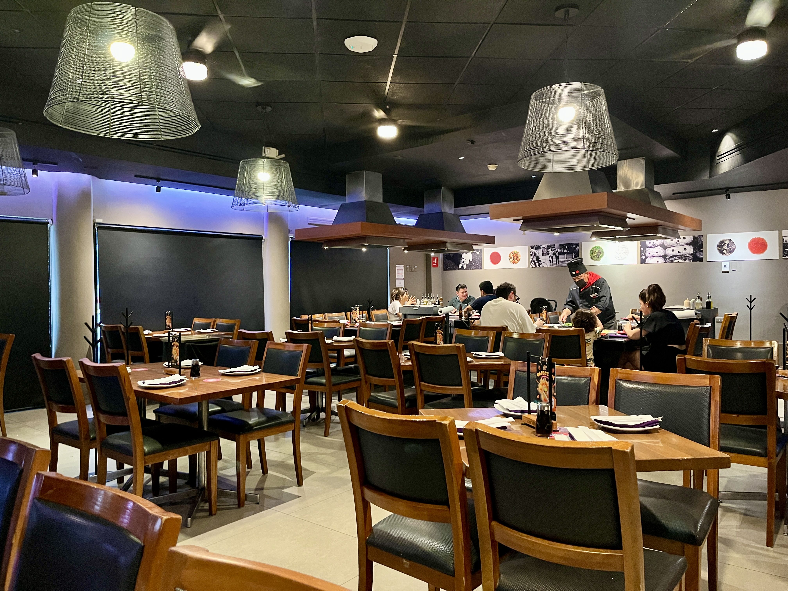
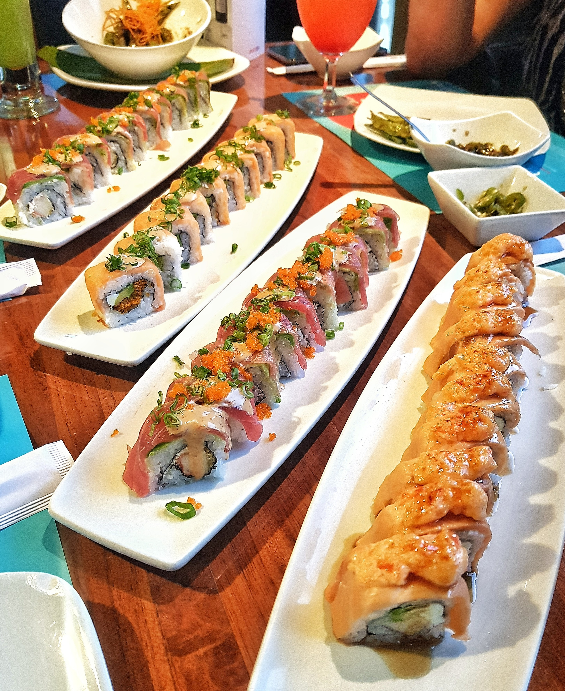
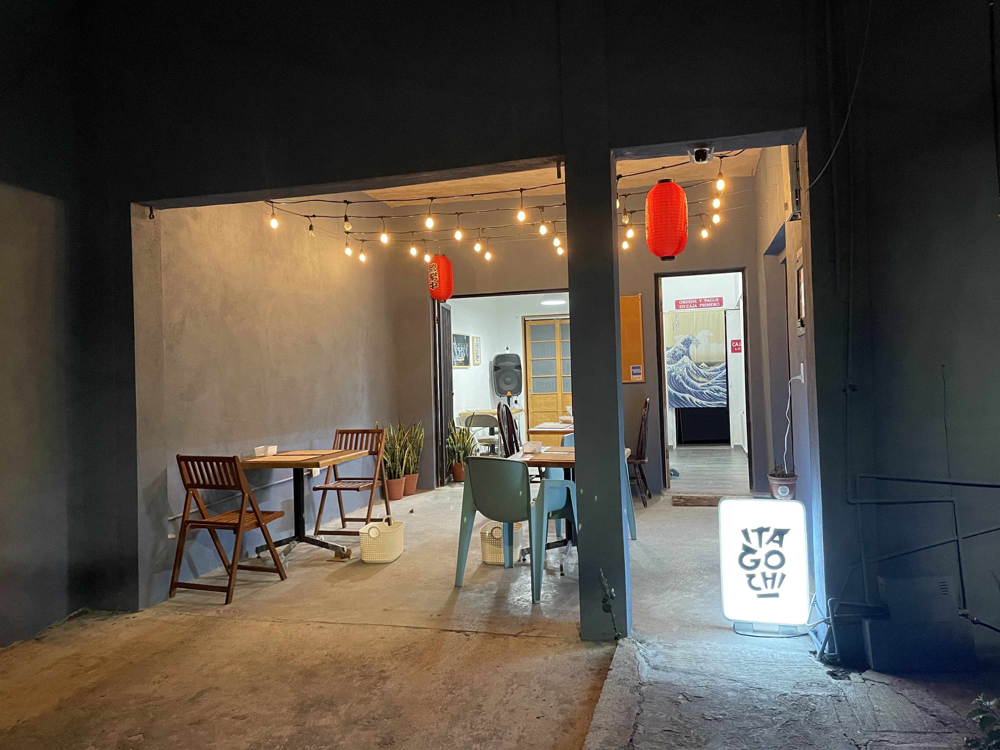
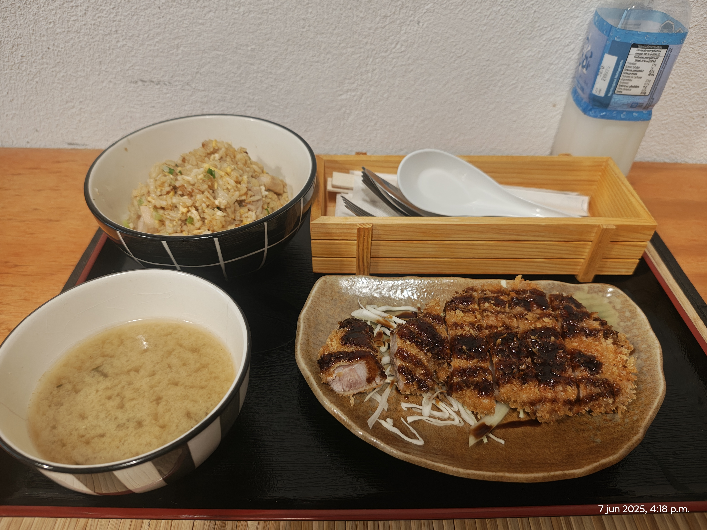
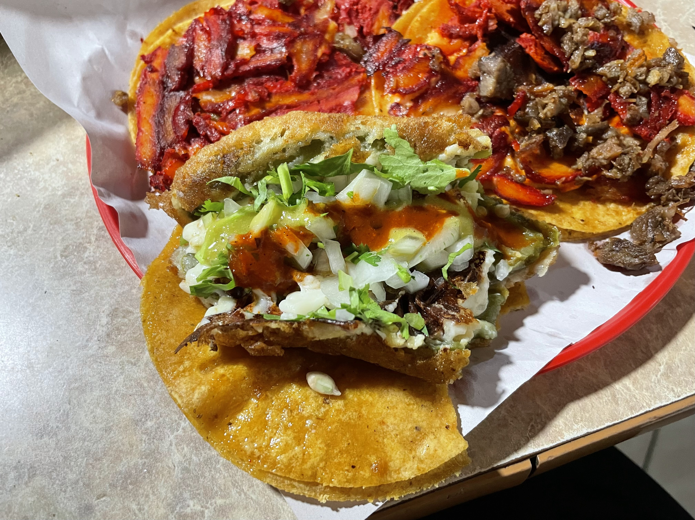
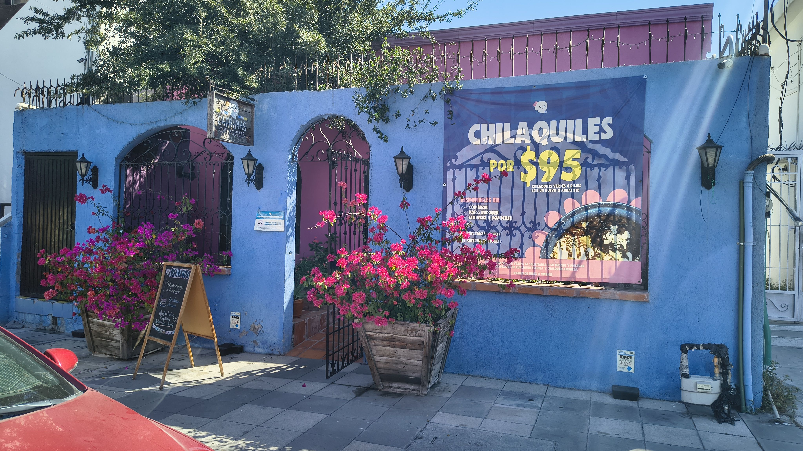
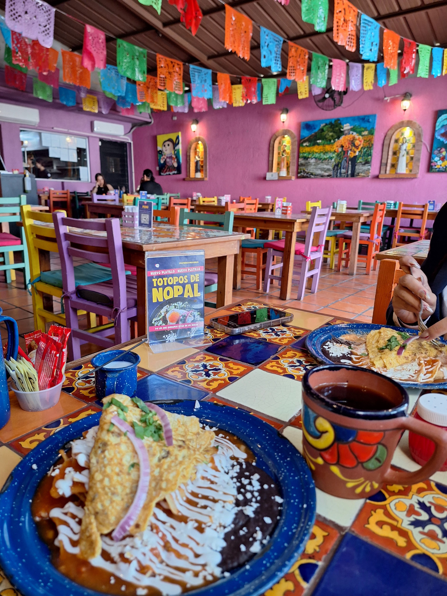

Blog de comidas por Azul Tamara


Pagina de Lugares
Esta es la seccion de lugares. Aqui tenemos algunas recomendaciones de restaurantes basadas en mis gustos. Todos estos restaurantes se pueden encontrar dentro del área metropolitana de Monterrey y les aseguro que les encantarán.
MONTERREY NUEVO LEON, MEXICO
Sushiito
Sushiito es una de las cadenas de cocina japonesa con mayor trayectoria en Monterrey, conocida por haber sido pionera en la "mexicanización" del sushi. Su propuesta se aleja del purismo japonés para abrizar ingredientes locales como el chile serrano, el queso crema y el aguacate. El ambiente en sus sucursales regias suele ser moderno, relajado y familiar, ideal para una comida rápida o una reunión casual. En su menú destacan los rollos empanizados y sus icónicos arroces "Yakimeshi", que han adaptado al paladar del norte de México con porciones generosas. Es el lugar de referencia para quienes buscan sabores reconfortantes, salsas agridulces y una experiencia de sushi accesible y sin pretensiones. A pesar de la creciente competencia de barras de sushi especializadas, Sushiito mantiene su relevancia gracias a su consistencia y a esa fusión única que logra que el sushi se sienta como un plato local más, perfecto para compartir en centros comerciales o zonas de alta afluencia en la ciudad.


Itagochi
Itagochi se ha consolidado en la escena culinaria de Monterrey como un destino predilecto para los amantes del ramen y la cocina japonesa auténtica con un toque contemporáneo. A diferencia de las grandes cadenas, este restaurante destaca por la profundidad de sus caldos y la calidad de sus fideos, ofreciendo una experiencia más artesanal. Su atmósfera suele ser acogedora y minimalista, diseñada para que el comensal se concentre en la calidez de un tazón de ramen humeante. El menú incluye variedades que van desde el Tonkotsu hasta opciones más especiadas, acompañadas de entradas clásicas como gyozas perfectamente doradas. Es un sitio muy valorado por la comunidad joven de Monterrey que busca autenticidad en los sabores orientales sin perder la comodidad de un servicio atento. La atención al detalle en la presentación de sus platos y el equilibrio de sus ingredientes hacen de Itagochi un punto de encuentro esencial para quienes desean explorar la cultura japonesa más allá de los rollos convencionales, brindando un rincón de calma y buen sabor en la vibrante capital de Nuevo León.


Tacos Felix
Tacos Felix es una verdadera institución en la cultura gastronómica de Monterrey, representando la esencia de la comida callejera elevada a un nivel de tradición familiar. Este establecimiento es famoso por sus tacos de carne asada, bistec y gringas, servidos con la rapidez y el sabor que caracteriza a las mejores taquerías del norte. Lo que realmente distingue a Tacos Felix es la frescura de sus ingredientes y sus salsas caseras, que son el complemento perfecto para una tortilla bien caliente. El ambiente es vibrante, ruidoso y auténticamente regio; es el lugar donde se borran las clases sociales frente a un plato de tacos al pastor o una "campechana". Ya sea para una cena nocturna después de un evento o un almuerzo rápido, la eficiencia de su servicio y el sabor constante de su carne han generado una lealtad inquebrantable entre los habitantes de la ciudad. Es un punto de parada obligatorio para cualquiera que desee entender por qué Monterrey es considerada la capital de la carne en México, ofreciendo una experiencia sin lujos pero llena de sabor.


Las catrinas
Las Catrinas es un restaurante que celebra la riqueza de la cocina mexicana tradicional en el corazón de Monterrey, envolviendo a sus visitantes en una atmósfera colorida y festiva. Inspirado en la iconografía del Día de Muertos y el folclore nacional, el lugar ofrece una experiencia visual tan rica como su menú. Especializado en platillos clásicos como enchiladas, moles y antojitos regionales, Las Catrinas logra capturar el sazón casero que muchos buscan en la ciudad. Es un espacio ideal para desayunos familiares o comidas de fin de semana, donde el café de olla y las tortillas hechas a mano son protagonistas. Su decoración, llena de arte popular y detalles vibrantes, lo convierte en un sitio fotogénico que atrae tanto a turistas como a locales que desean reconectar con sus raíces. El servicio se caracteriza por la calidez mexicana, haciendo que cada comensal se sienta como en casa. En un Monterrey dominado por cortes de carne y fusiones internacionales, Las Catrinas permanece como un bastión del patrimonio culinario de México, ofreciendo platos que alimentan tanto el cuerpo como el espíritu.


hello